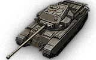
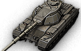
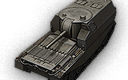
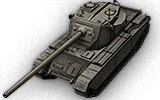
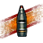
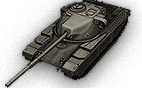
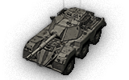
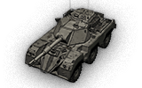
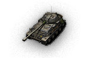

United Kingdom · Tier IX
All nations and tiers · EU v20410 → RU v14600ru · 3 November 2026
Centurion Mk. 7/1 · Tier IX

Mobility
Forward speed on soft terrain (km/h) EU 39.91  RU 38.54
RU 38.54
Engine power (hp) EU 1 040 RU 1 004.42
Power/weight (hp/t) EU 19.92 RU 19.24
Tank traverse on hard terrain (°/s) EU 36.55 RU 45.68
Tank traverse on medium terrain (°/s) EU 33.23 RU 41.52
Tank traverse on soft terrain (°/s) EU 19.24 RU 24.04
Armor & health
Health EU 1 800 RU 1 720
Conqueror · Tier IX

Mobility
Forward speed on soft terrain (km/h) EU 25.14 RU 23.89
Engine power (hp) EU 1 000 RU 950
Power/weight (hp/t) EU 15.19 RU 14.44
Tank traverse (°/s) EU 34.42 RU 27.12
Tank traverse on hard terrain (°/s) EU 35.95 RU 35.24
Tank traverse on medium terrain (°/s) EU 30.42 RU 29.82
Tank traverse on soft terrain (°/s) EU 17.19 RU 16.85
Armor & health
Health EU 2 000 RU 1 950
Miscellaneous
Moving camo EU 2.28 RU 2.22
Moving camo · after firing EU 0.43 RU 0.42
Conqueror FL · Tier IX

Mobility
Forward speed on soft terrain (km/h) EU 25.14 RU 23.89
Engine power (hp) EU 1 000 RU 950
Power/weight (hp/t) EU 15.19 RU 14.44
Tank traverse (°/s) EU 34.42 RU 27.12
Tank traverse on hard terrain (°/s) EU 32.70 RU 25.76
Tank traverse on medium terrain (°/s) EU 27.67 RU 21.80
Tank traverse on soft terrain (°/s) EU 15.64 RU 12.32
Armor & health
Health EU 2 000 RU 1 950
Miscellaneous
Moving camo EU 2.28 RU 2.22
Moving camo · after firing EU 0.43 RU 0.42
FV3805 · Tier IX

Penetration (mm)
EU  HE 46 /
HE 46 /  HE 58 /
HE 58 /  AP 306 → RU
AP 306 → RU  HE 46 /
HE 46 /  AP 306
AP 306
Damage (HP)
EU  HE 850 /
HE 850 /  HE 1000 /
HE 1000 /  AP 560 → RU
AP 560 → RU  HE 1000 /
HE 1000 /  AP 600
AP 600
Firepower
DPM (HP/min) EU 1 437.65 RU 1 840.59
Rate of fire (rounds/min) EU 1.69 RU 1.84
Reload time (s) EU 35.47 RU 32.60
Explosion radius EU 9.50 RU 7.20
Stun duration · maximum (s) EU 28 → RU —
Stun duration · minimum (s) EU 12.60 → RU —
Shell velocity (m/s) EU 440 RU 350
Max range (m) EU 1 353.85 RU 1 004.10
Potential damage EU 40 800 RU 48 000
Gun handling
Dispersion · turret traverse EU 0.47 RU 0.42
Armor & health
Health · track EU 240 RU 150
Track repair time (s) EU 11.70 RU 12.63
Miscellaneous
Shell cost EU 1 830 RU 2 080
FV4004 Conway · Tier IX

Penetration (mm) 
EU  AP 260 /
AP 260 /  HE 70 → RU
HE 70 → RU  AP 280 / HE 210 /
AP 280 / HE 210 /  HE 70
HE 70
Damage (HP)
EU  AP 600 / HE 770 /
AP 600 / HE 770 /  HE 770 → RU
HE 770 → RU  AP 600 / HE 910 /
AP 600 / HE 910 /  HE 910
HE 910
Firepower
Module damage EU 189 RU 191
Gun handling
Dispersion · moving EU 0.27 RU 0.30
Dispersion · tank traverse EU 0.27 RU 0.30
Elevation (°) EU 15 RU 10
Mobility
Forward speed (km/h) EU 50 RU 40
Forward speed on hard terrain (km/h) EU 50 RU 40
Forward speed on medium terrain (km/h) EU 50 RU 40
Reverse speed (km/h) EU 20 RU 15
Tank traverse (°/s) EU 45.89 RU 29.20
Tank traverse on hard terrain (°/s) EU 49.48 RU 38.94
Tank traverse on medium terrain (°/s) EU 44.98 RU 35.40
Tank traverse on soft terrain (°/s) EU 26.04 RU 20.50
FV4201 Chieftain Proto · Tier IX

Firepower
DPM (HP/min) EU 2 086 RU 2 215.22
Rate of fire (rounds/min) EU 5.21 RU 5.54
Reload time (s) EU 11.51 RU 10.83
Gun handling
Aim time (s) EU 2.59 RU 2.21
Dispersion · moving EU 0.22 RU 0.16
Dispersion · tank traverse EU 0.22 RU 0.16
GSOR 1006 Scheme 7 · Tier IX


Damage (HP)
EU  AP 420 /
AP 420 /  APCR 420 /
APCR 420 /  HE 510 → RU
HE 510 → RU  AP 390 /
AP 390 /  APCR 390 /
APCR 390 /  HE 480
HE 480
Firepower
DPM (HP/min) EU 2 246.46 RU 2 043
Rate of fire (rounds/min) EU 5.35 RU 5.24
Reload time (s) EU 11.22 RU 11.45
Potential damage EU 16 800 RU 15 600
Mobility
Forward speed on soft terrain (km/h) EU 48.71 RU 65
Terrain resist (hard) EU 0.96 RU 0.12
Terrain resist (med) EU 1.05 RU 0.12
Terrain resist (soft) EU 1.82 RU 0.12
Tank traverse (°/s) EU 36.50 RU 67.80
Tank traverse on hard terrain (°/s) EU 32.85 RU 61.01
Tank traverse on medium terrain (°/s) EU 29.86 RU 61.01
Tank traverse on soft terrain (°/s) EU 17.29 RU 61.01
Armor & health
Health EU 1 700 RU 1 650
GSOR 3301 AVR FS · Tier IX

Firepower
DPM (HP/min) EU 1 580.97 RU 1 548.38
Rate of fire (rounds/min) EU 6.59 RU 6.45
Reload time (s) EU 9.11 RU 9.30
Ammo capacity EU 38 RU 25
Potential damage EU 9 120 RU 6 000
Mobility
Forward speed (km/h) EU 68 RU 65
Forward speed on hard terrain (km/h) EU 68 RU 65
Forward speed on medium terrain (km/h) EU 68 RU 65
Forward speed on soft terrain (km/h) EU 68 RU 65
Tank traverse on hard terrain (°/s) EU 46.01 RU 70.46
Tank traverse on medium terrain (°/s) EU 40.90 RU 62.63
Tank traverse on soft terrain (°/s) EU 26.29 RU 40.26
Armor & health
Track armor EU 10 RU 15
Health EU 1 450 RU 1 250